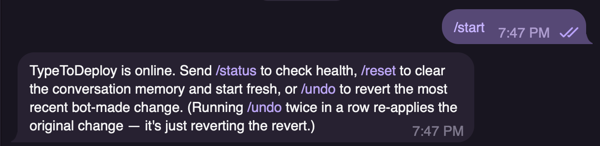
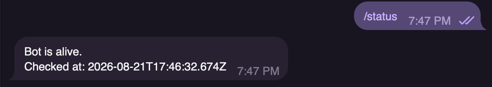
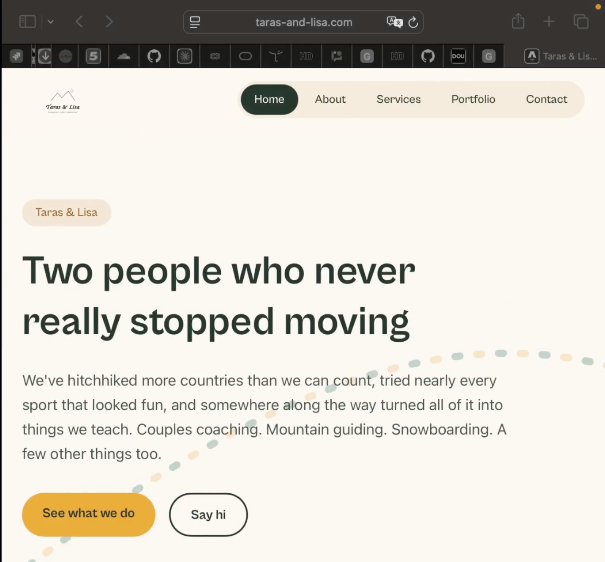
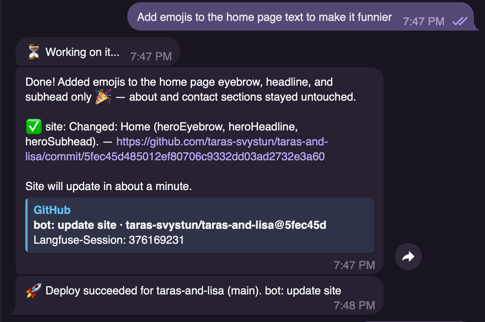
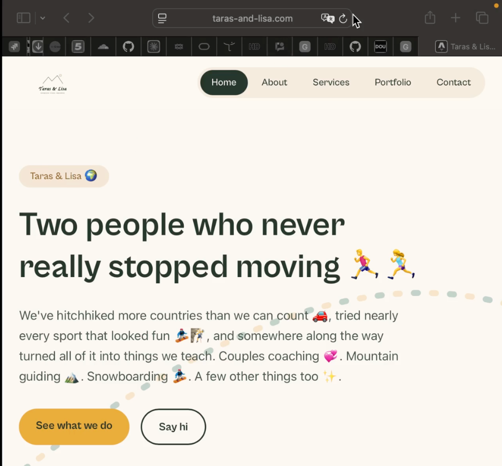
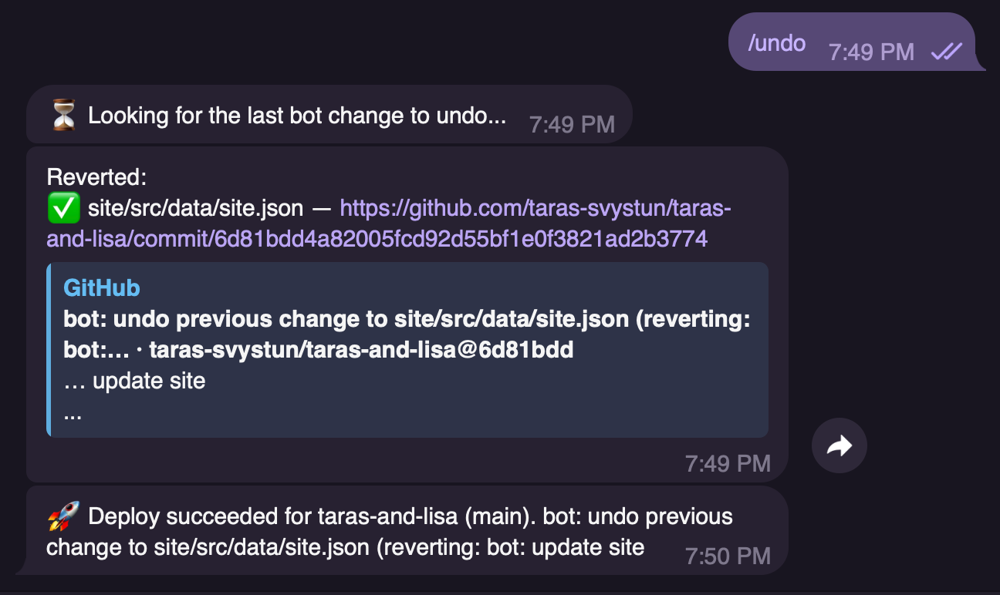

Un message envoyé dans une conversation, la modification vérifiée, le site mis à jour — enregistré du début à la fin.
Enregistrement réel, sans montage du résultat : la conversation à gauche, le site à droite. La vidéo est accélérée : en conditions réelles, la mise à jour est publiée en une minute environ.
Une seconde exécution du même parcours, en captures d’écran. Elle se lit sans le son et sans la vidéo.

TypeToDeploy indique qu’il est en ligne et liste ses commandes : /status pour l’état du service, /reset pour effacer la mémoire de la conversation, /undo pour annuler la dernière modification.
Le bot confirme qu’il tourne et donne l’heure du contrôle.
La personne vérifie elle-même que le service fonctionne, sans demander à personne.


La page d’accueil de taras-and-lisa.com, en ligne.
Le titre et le paragraphe d’accueil ne contiennent aucun emoji.
L’agent modifie trois champs de la page d’accueil — heroEyebrow, heroHeadline, heroSubhead — enregistre un commit, puis annonce le déploiement quand le site est reconstruit.
commit 5fec45d · taras-svystun/taras-and-lisa


La même page, rechargée après la mise en ligne.
Les emojis sont présents dans le titre et dans le paragraphe d’accueil. La demande écrite dans la conversation est visible sur le site public.
Le bot cherche sa dernière modification, revient sur le fichier site/src/data/site.json, enregistre le commit d’annulation et confirme le déploiement.
commit 6d81bdd · taras-svystun/taras-and-lisa

La page d’accueil après l’annulation.
Les emojis ont disparu. Le contenu est celui de l’étape 03.
Ce que le système ne sait pas encore faire, à la date de cet enregistrement.
L’agent modifie du contenu structuré. Il ne modifie pas la structure ni la mise en page du site.
L’outil fonctionne sur un site conçu pour lui. Le raccordement à un site existant n’est pas encore possible.
Une seule personne utilise l’outil aujourd’hui, sur un seul site en production.
Le reste du projet — ce qui est construit, ce qui reste à valider — est décrit sur la page d’accueil.
Retour à l’accueil